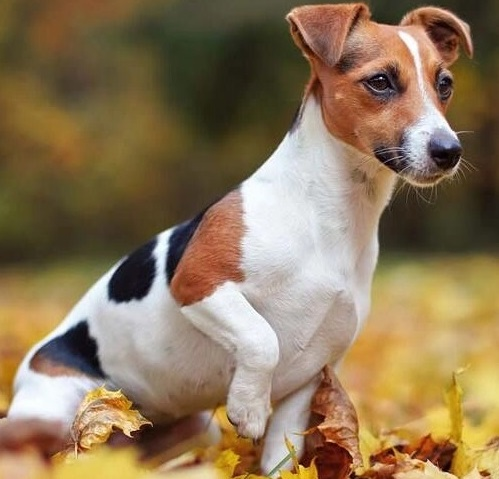
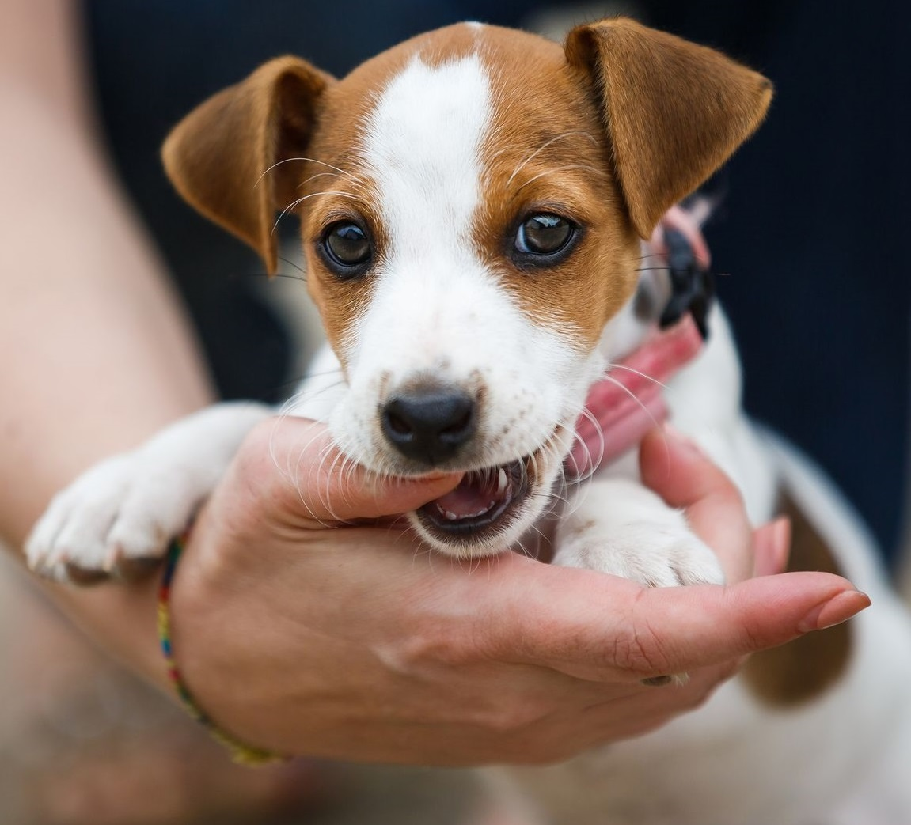

About Jack Russell Terriers
Jack Russell Terriers are small but energetic dogs that are known for their intelligence and loyalty. They were originally bred in England for fox hunting and are still used today for various tasks such as hunting, agility, and obedience competitions. They are generally friendly and affectionate towards their owners, but can be wary of strangers and other animals. They require a lot of exercise and mental stimulation to stay healthy and happy.
Pictures

